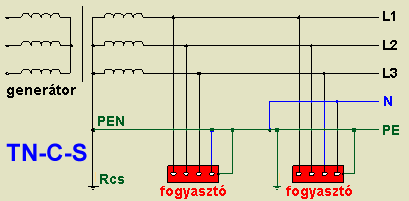

|
TT - rendszer (földeléses rendszer
védőföldeléssel):
|
A közműhálózati kisfeszültségű rendszereket (Európában mindenütt)
a tápláló transzformátor csillagponti kivezetésénél, üzemi okokból, közvetlenül
(impedancia beiktatása nélkül) leföldelik. Ezt mutatja a kétbetűs rendszerjelölés
első T betűje (T=terra, földelés). Ha a fogyasztó-berendezések testjeit védővezetőn
át ugyancsak földelik, akkor ezt a földelést mutatja a jelölés második T betűje. Ha
a készülék testzárlatos lesz, akkor a fázisvezetőn, a hibahelyen, az Ra
védőföldelésen, és a rendszer Rcs csillagponti földelésén át testzárlati áram lép
fel. Ha ennek a testzárlatnak az áramerőssége kicsi, akkor ez a védiföldelés R
ellenállásán aránylag kis (a megengedheti UL= A 50 V-nál kisebb)
feszültségemelkedést okoz. Ha az áramerisség nagy, úgy - az előírt rövid időn belül,
a túláramvédelm kioldja azt (az ehhez tartozó áramerősséget jelöljük Ia -val).
|
A méretezési a képlet: Ra*Ia <= 50 V
Ha a túláramvédelem kioldóárama, a rajta
keresztül folyó üzemi áram miatt nem választható az előző összefüggést kielégítő
kis értékre, akkor az érintésvédelmi kioldást áramvédőkapcsolóval lehet
megoldani.
|
|
TN -rendszer
(nullázás):
Ha a közvetlenül földelt közműhálózatot üzemeltető áramszolgáltató ehhez
hozzájárul, akkor a nullavezetőt védővezetőként is szabad felhasználni, ez a nullázás,
nemzetközi jelöléseTN- rendszer. (Hazánkban az áramszolgáltatói hálózatok több mint, 90%-a
nullázott). Ebben a kétbetűs jelölésben, a második betű a testhez kötött nullavezetőt jelöli.
Elvben ennek három megoldása van:
|
Nullával egyesített védivezető. (TN-C rendszer)
Az első szerint, sehol sem építenek ki külön védivezetőt, az egyfázisú üzemi
áramok vezetésére szolgáló nullavezetőt (jelölése N=neutral) kötik minden fogyasztó
készülék testére. Ebben az esetben a rendszer jelölése TN-C (a C=common jelzi, hogy
a
védővezető és a nullavezető mindenütt közös). Ez a lehetőség bizonyos esetekben
csupán elvi, mert 10mm2-nél kisebb keresztmetszetű vezetékeknél a közösítést, a
közös vezető megszakadásának veszélye miatt, a szabvány tiltja. Azt a vezeték
szakaszt, amely egyszerre tölti be a védivezető (PE) és az üzemi nullavezető (N)
szerepét, a két jelölés PE és N egybeírásával PEN vezetőnek (nullával egyesített
védővezető) nevezik.
|
|
Elkülönített védővezető (TN-S
rendszer)
A második lehetőség az, hogy a védővezetőt mindjárt a tápláló transzformátortól
kezdve külön választják az egyfázisú üzemi áramokat vezető nullavezetőtől Ezt a
megoldást TN-S (S=separated, elkülönített) betűcsoporttal jelölik. Ez a megoldás is
kizárólag elvi jelentőségű, mert az áramszolgáltató sehol a világon nem vállalja,
hogy az elosztóhálózatán kiépítse a védővezető céljára szolgáló ötödik vezetőt.
|
|  |
Egy darabig közös PE N (TN-C-S
rendszer)
A harmadik megoldás a leggyakoribb. Egy darabig közös az üzemi nullavezető és
a védővezető(ez tehát a PEN vezető), majd egy ponton szétválnak. Ilyen megoldású
rendszert TN-C-S betűcsoporttal jelölik. Azt, hogy a két vezető szétválasztása hol
történjen (áramszolgáltatói csatlakozópontnál, az épületbe való becsatlakozásnál, a
fogyasztásmérőnél, vagy csupán a 10 mm2-nél kisebb keresztmetszetű vezetékek
csatlakozásánál) a helyi viszonyok és körülmények döntik el. A szétválasztott
szakaszon a védővezetőt (PE) nullázóvezetőnek nevezik.
|
A TN rendszerű hálózaton fellépő testzárlati áram gyakorlatilag nem halad a
talajon át, szinte teljesen fémes úton (a fázisvezetőn, a nullázóvezetőn és a PEN-vezetőn át)
záródik. Ennek megfelelően a földhöz képest ennek hatására fellépő feszültségemelkedést nem
lehet számítani, itt a méretezés csak azt veszi számításba, hogy a fázisfeszültség (Uo) a
zárlati kör impedanciáján (amit "hurok impedanciá"-nak, vagy egyszerűen "hurokellenállás"-nak
neveznek és Zs-el jelölnek) át tud-e hajtani olyan nagyságú áramot, ami a túláramvédelmet az
előírt időn belül mőködteti.
Zs*Ia <= Uo
Áramvédő kapcsolás a nullázott hálózaton is alkalmazható, de csak
azokon a szakaszokon, ahol az üzemi vezetö és a nullavezető már szét van választva
(tehát a PEN vezetők szakaszán nem!).
|
|
IT - rendszer (védőföldelés közvetlenül nem
földelt rendszerben):
|
A közvetlenül földelt nullavezetőjű (TT-TN-rendszerű) hálózatok
földzárlat esetén nem tarthatók üzemben. Ezért olyan helyen, ahol az ellátás
folytonossága elengedhetetlen, a váratlan kikapcsolás életveszélyt, vagy igen nagy
anyagi kárt okozna (pl. kórházi műtők, földalatti bányahálózatok, kohók, egyes vegyi
üzemek), a nullavezetőt nem (vagy csak nagy ellenálláson át) földelik.
Érintésvédelemre ez esetben is szükség van, mert egyrészt földzárlat (testzárlat)
esetén a vezetékhálózat és a fogyasztókészülékek földhöz viszonyított kapacitásán
átfolyó "földzárlati áram" emberre veszélyes nagyságú lehet, másrészt kettős (két
helyen, és eltérő fázisokban fellépő) földzárlat esetében a testzárlatos szerkezetek
esetében veszélyes feszültség lépne fel. Ezért ezen rendszerekben is kötelező a
földelt védővezető kiépítése. (Az IT jelölés a táptranszformátor szigetelt
(I=isolated, szigetelt), vagy nagy impedancián át földelt (amit esetleg csak a
hálózat és a szerkezetek földkapacitása képvisel), csillagpontjára utal, míg a
második helyen álló T betű a testek védőföldelését jelenti.).
|
Az IT rendszer méretezési képlete az első
földzárlatra:
Ra*Id <= Ul
Itt az első földzárlat nem okoz kioldást, ezért a képletben nem a
kioldóáram, hanem a hálózat adottságaiból (elsősorban földkapacitásából) kiadódó "földzárlati
áram" szerepel. A második földzárlatra is méretezni kell, de ez bonyolultabb.
|